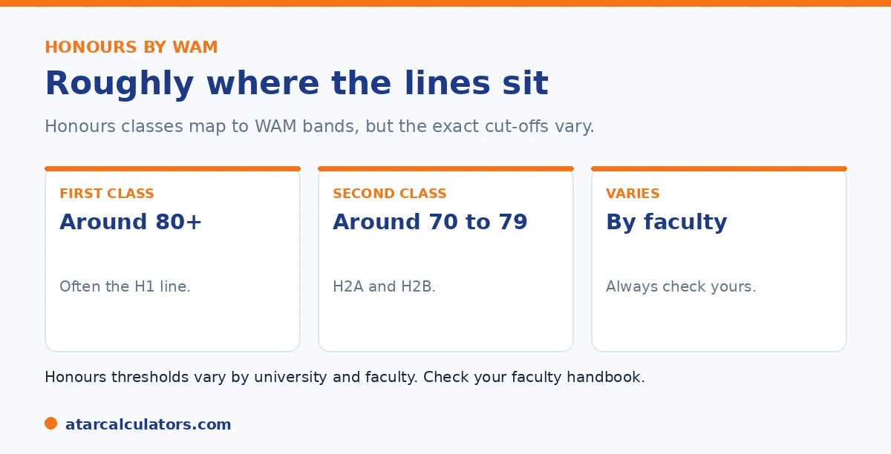

Here is the short version. Honours classes map roughly to WAM bands. As a general guide, First Class Honours usually needs a WAM around 80 or above. Second Class Division 1 sits around 75 to 79, and Second Class Division 2 around 70 to 74. Third Class sits around 65 to 69. But these thresholds vary by university and faculty. And some set First Class at 75. So always check your specific faculty handbook.
Honours is a major goal for many students, and WAM is usually how eligibility is decided. The classes line up roughly with WAM bands, with some variation.
Below is the general picture, with the caveats that matter. To see your WAM, use our WAM calculator.
Key takeaways
- First Class usually needs a WAM around 80+.
- Second Class Division 1 is around 75 to 79.
- Second Class Division 2 is around 70 to 74.
- Third Class is around 65 to 69.
- Some universities set First Class at 75.
- Thresholds vary by university and faculty.
The honours bands, roughly
Honours classes map roughly to WAM bands. As a general guide across Australian universities, the classes line up with these WAM ranges, though the exact cut-offs vary.

First Class Honours usually needs a WAM around 80 or above. Second Class is generally split into Division 1, around 75 to 79, and Division 2, around 70 to 74. Third Class is around 65 to 69.
Why the thresholds vary
The important caveat is that these are not universal. Universities and faculties set their own honours thresholds. Some set First Class at a WAM of 75 rather than 80, and the lower bands shift accordingly.
Competitive faculties may also have higher informal expectations. So the bands above are a guide, not a rule. Always confirm with your specific faculty. See our guide on what counts as a good WAM.
Want to see your WAM?
Try the WAM calculator →Why honours uses WAM
Honours usually uses WAM rather than GPA because WAM is more precise. It keeps your exact marks, so it distinguishes between students who would share the same grade band. That matters when ranking applicants for limited places.
So your WAM, not a GPA, is typically the number that decides honours eligibility. See our guide on WAM vs GPA.
Planning for honours
If you are aiming for honours, find your faculty's exact WAM threshold early, then plan toward it. Because later-year units often weigh more, strong final-year results can lift your WAM toward the line.
If your WAM is close to a threshold, the final-year units carry the most weight, so they are where to focus. See our guide on WAM boost strategies.
Planning for honours works best when you treat the threshold as a target to work backwards from, not a number to discover at the end. Find your faculty's exact honours WAM requirement in first or second year. This is because it varies by discipline and the first-class band in particular is usually around 80 but can differ. Then track your WAM as you go. So you know well in advance whether you are on line, above it, or need to lift. Because many universities weight later-year units more heavily, your final-year subjects are the ones that can move your WAM most, which cuts both ways. A strong finish can pull a borderline average up to the threshold. A weak final year can undo earlier good work. That makes your last two or three sessions the ones to protect, both in workload and in the units you choose. It is also worth knowing that honours entry sometimes considers your WAM in the relevant major rather than your whole-degree WAM. So check which figure your faculty uses. This is because a student who is stronger in their major than overall may clear the bar on the measure that actually counts. Confirm the exact threshold and the exact WAM it applies to early. And you can steer toward it deliberately instead of hoping the number lands in the right place.
Entry into honours vs your honours class
It helps to separate two things. Entry into an honours year usually depends on your undergraduate WAM, often a credit-to-distinction average. The class of honours you graduate with depends on your performance during the honours year itself.
So your undergraduate WAM gets you into honours, and your honours-year WAM determines whether you achieve First Class or another division. Both matter, at different stages, so check which one a requirement refers to.
The honours classes and their WAMs
Honours results are divided into classes, usually with WAM thresholds. First Class (H1) commonly needs a WAM around 80, H2A around 75, and H2B around 70, though some faculties set these a little differently, with H1 sometimes at 75.
The higher the class, the more doors it opens for research and scholarships. First Class and the upper Second Class division keep competitive research pathways open, so aim as high as you can in the honours year.
WAM for postgraduate study
Postgraduate coursework often states its entry requirement as a WAM, commonly a pass-to-credit average as a minimum, with selective courses expecting a distinction average, around 75 or higher. Research degrees usually require honours or a strong research record.
So a credit average opens many postgraduate doors, and a distinction average opens most. As always, the specific course sets the bar, so check its entry requirement and whether it is stated as a WAM or a GPA.
If you are just below the requirement
If your WAM sits just below an honours or postgraduate threshold, you are not necessarily excluded. Some programs weight your marks in the relevant discipline, consider recent improvement, or take relevant experience into account.
So it is worth contacting the faculty directly and asking how they assess borderline applicants. A strong upward trend, or strong results in the key subjects, can sometimes make the difference at a threshold.
Check your WAM against the threshold
To see where you stand against these honours thresholds, calculate your WAM and compare it to the requirement for the class or program you want. Knowing your number, and the target, tells you exactly how far you have to go.
Because WAM uses your exact marks, you can also see how lifting specific units would move your average towards a threshold. See the WAM calculator to work it out.
Common questions
What WAM do I need for honours?
As a rough guide, First Class Honours usually needs a WAM around 80 or above, Second Class around 70 to 79, and Third Class around 65 to 69. But thresholds vary by university and faculty. So check your faculty handbook.
What WAM is First Class Honours?
Usually around 80 or above, though some universities and faculties set it at 75. Competitive faculties may have higher informal expectations. The exact threshold varies, so always confirm with your specific faculty.
What WAM is Second Class Honours?
Second Class is generally split into Division 1, around a WAM of 75 to 79, and Division 2, around 70 to 74. These are general guides, and the exact cut-offs vary by university and faculty.
Do honours thresholds vary by university?
Yes. Universities and faculties set their own honours WAM thresholds, so they differ. Some set First Class at 75 rather than 80, with the lower bands shifting accordingly. Always check your faculty handbook for the exact figures.
Why does honours use WAM instead of GPA?
Because WAM is more precise. It keeps your exact marks, so it distinguishes between students who would share the same grade band. That matters when ranking applicants for limited honours places, so WAM is the usual measure.
Check your WAM for honours
See your WAM and how close you are to honours bands. Free, and no signup.
Open the WAM calculator →Related guides
This guide is general information for students, not formal academic advice. WAM and GPA policies, grade bands and honours thresholds vary by university and faculty, and can change. Failed units, year weighting and which units count are all set by each university. Always confirm with your own university's official grading and WAM policy, such as the University of Sydney or your own institution. Reviewed by the ATARCalculators Editorial Team.